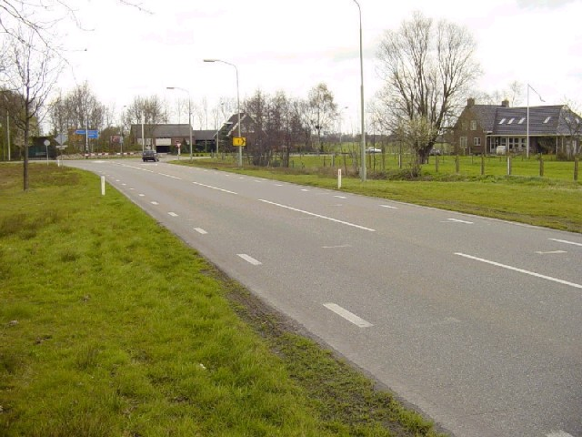
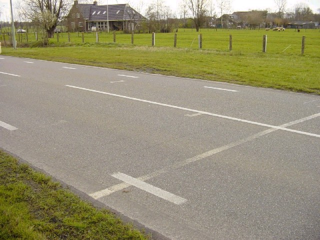
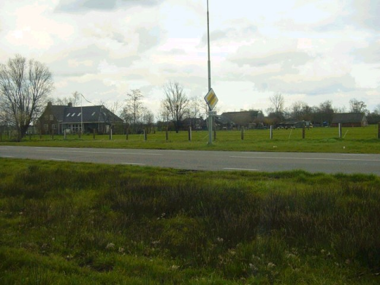
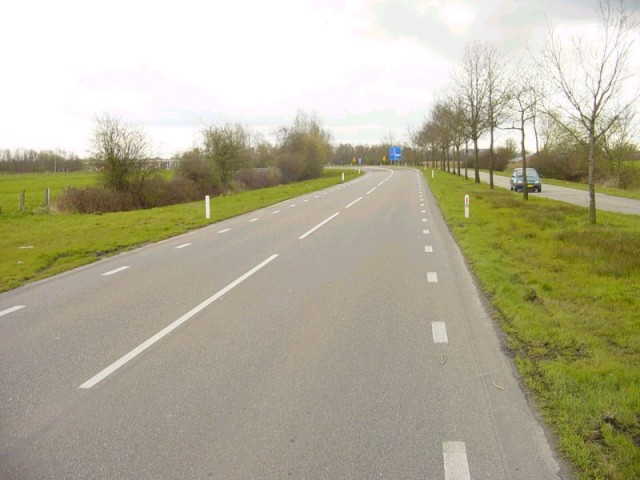
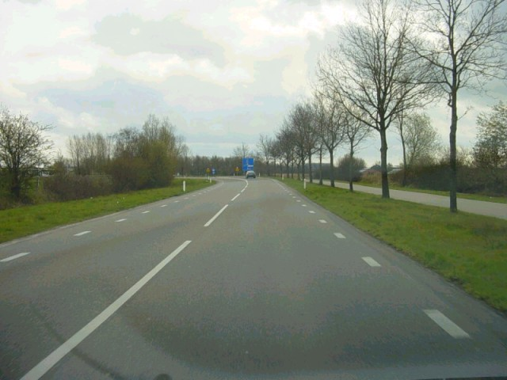
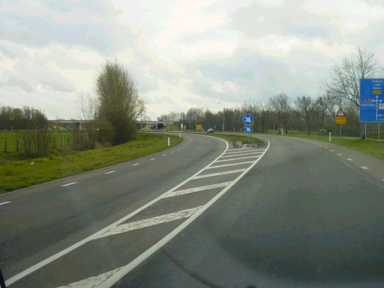

Tolbert - Start/Finish straight on 'Oude Postweg'
|| Contents | Start/Finish Straight | First Corner | Second Corner | Third Corner | Last Corner || Home ||
Click on the hyperlinks above to view photographs of that
section.
The numbers and arrows on the map represent the location and direction of where
each of the photographs were taken.

01 - Looking back from the Start/Finish area towards the final corner

02 - The starting grid on the 'Oude Postweg'

03 - The start/finish line

04 - The start/finish line is exactly 100 meters (109 yards) from the last corner

05 - From the start/finish line in the direction of the first corner

06

07 - The circuit continues to the left side of the 'Oude Postweg'
Photographs & Text ©Roelard Smit. Reproduced here with kind permission.